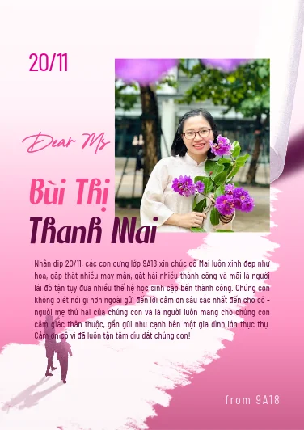

20/11 · LƯU BÚT 9A18
Cô Bùi Thị Thanh Mai
Nhân dịp 20/11, các con cưng lớp 9A18 xin chúc cô Mai luôn xinh đẹp như hoa, gặp thật nhiều may mắn, gặt hái nhiều thành công và mãi là người lái đò tận tụy đưa nhiều thế hệ học sinh cập bến thành công. Chúng con không biết nói gì hơn ngoài gửi đến lời cảm ơn sâu sắc nhất đến cho cô - người mẹ thứ hai của chúng con và là người luôn mang cho chúng con cảm giác thân thuộc, gần gũi như cạnh bên một gia đình lớn thực thụ. Cảm ơn cô vì đã luôn tận tâm dìu dắt chúng con!
from 9A18
